读书使人快乐，了解是最大的喜悦
分类：个人日记 发布日期：2017-08-27 00:21
看了下上篇日志的截止时间，约莫有一年了，本来想把标题写成：【震惊！一年竟然读了50本书！！！】，幼稚，你以为我还是当年的我吗，我的日志不是为了装逼，只是为了记录属于我一个人的历史。其实写这篇日志的缘由很简单：今天统计了一下工作一年内的书单，发现可以写一篇新风格的日志。也不是我有意要统计，因为我最近要换个地方住，我觉得我需要把一部分书邮寄回去，否则我绝对会后悔。工作一年以来，大大小小换了4次住处，有最开始的两袋个人物品，到后来的三、四袋，以及最近今年三月份的那次，三个人往返两次都搬不玩的六七箱。。。嘛情况，这些东西哪来的，于是我就整理归类了一下我目前的个人物品，有必要将一些东西邮寄回去，以减轻将要的一次搬迁。整理中我发现，我这一年的书好像有一箱多，这绝对是一个天大的负担，但是寄回去就意味着这些书要抑或蒙尘，遂记之。
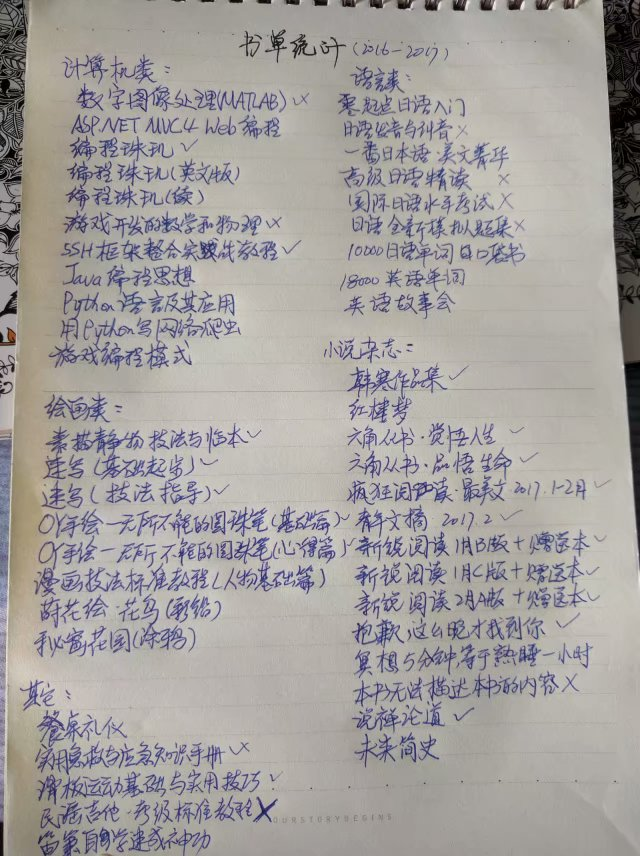
从书单中可以看出，书的种类蛮多，我准备按照顺序一本一本的记下来，篇章中会以分类来记录。
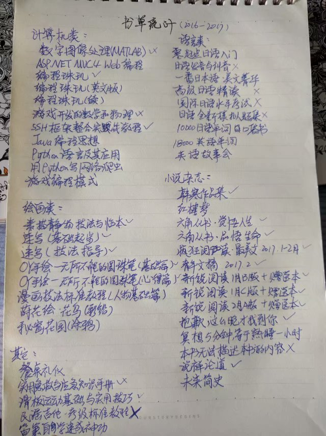
从书单中可以看出，书的种类蛮多，我准备按照顺序一本一本的记下来，篇章中会以分类来记录。
计算机类：
《数字图像处理（MATLAB）》。这是我当初最喜欢的一本书之一，在大二下学期貌似就买了，因为读着感觉蛮有“难度”，而且确实有难度，因为你如果仅仅只是使用的话就照着敲代码就行，但是想要创造应用就需要理解原理了。画了个勾叉就意味着我放弃读这本书了，原因不是很清楚，但当我翻开读到折角的那一页时，发现下一节是【卡洛南-洛伊变换】，然后就是满眼的求和公式、三角函数、方差矩阵。。。脑壳痛。书的最后一百页是附录：【必不可少的数学基础】，其中就包括什么数列极限、三四个中值定理呀、向量代数场论呀、乱七八糟的曲线积分求导呀、傅里叶级数、卷积公式呀、率失真函数、香农边界呀、高斯信源呀巴拉巴拉。。。是不是觉得讲出这些东西蛮牛逼的，其实我完全不会，之所以去记这些名词只是我觉得必要的时候可以讲粗来。。。不让真理蒙尘，哼。
《ASP.NET MVC4
Web编程》。这本书是大学的工作室的，当年毕业匆匆忙忙，东西全放在考研同学那里，等到再去拿的时候，发现有这本书，就一起带到住的地方了。想想在大学用了三年的ASP.NET C#，现在的我好像在用Java吃饭，也没怎么翻过了，改天有机会还回去，造福学弟学妹，唔。
《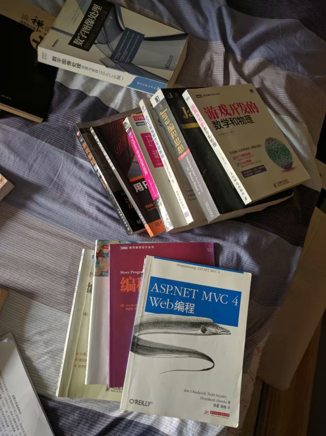编程珠玑系列》。最开始买的是《编程珠玑》，学习算法的，读了之后发现好读的停不下来，然后就买了《编程珠玑（续）》，不过貌似没有第一本好（=_=）。后来，不知道哪里听说中文翻译过来的书籍不能得原书全部奥义，于是我就买了一本英文原版的《编程珠玑》，最终发现还是要对着中文版的读，呼。不过偶尔可以翻译着打击一下用处不多的英语水平。
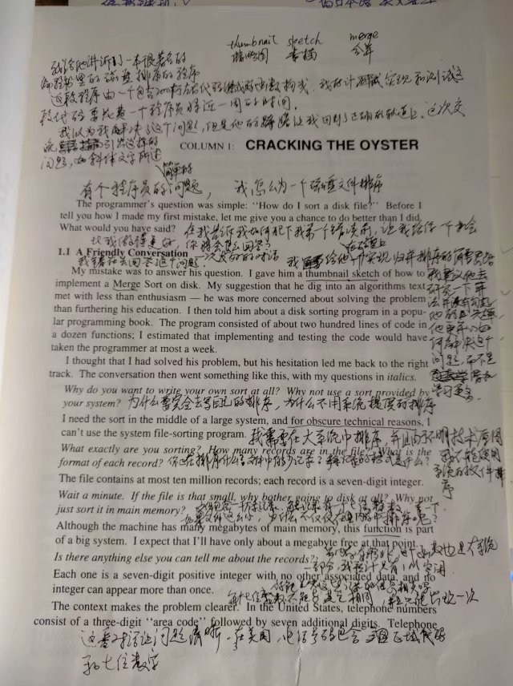
《游戏开发的数学和物理》。同理数字图像处理（MATLAB），有点烧脑，不过主要原因还是不知道怎么去实践，空有理论，不能方便的实践。JavaScript的canvas出来时候，写过简单的台球游戏，就是碰撞检测传递呀、摩擦力加速度呀，很简单的二维物理啦。虽说每个少年都有一颗游戏梦，但在那个小霸王满天的时代，现在的游戏还是太浮躁了，哎。
《SSH框架整合实战教程》。这是我为了我毕业的工作，学习JavaWeb用的。然而万万没想到，公司最开始接触的框架是JdonFramework
，完全跟不上时代呀。可怜我画了满书的线和一本子的笔记，不过后来还好换成了比较新的框架，虽然没有H，但是其他两个还在，一个月的书没白读，额。
《Java编程思想》
。这是我偷来的书，不要问为什么，不要问为什么，不要问为什么。公司换座位的时候，位置旁多了一本这样的书，当时每天中午翻着翻着感觉还不错，好像这本书也没有人要，我索性拿回去看了。幻想着看完，拿回去，造福下一代新人。算了，看这厚度让下一代新人去死吧，嘶。
《Python语言及其应用》。这本书是我刚来公司，公司送我的生日礼物。为啥？开玩笑，公司谁不知道我喜欢读书，哈哈哈。Python据说是粘合性很强的语言，可以和任何语言共存，而且功能极强，作为一个IT从业者，我居然不会，果断要了，为中国之崛起而读之。确实，Python语言学起来非常好懂，和写英文句子一样，一段程序写完就像写一篇小作文，虽然我的英语作文有史以来一直没什么亮点，但是不妨碍他语言的优美。简单说，如果C是底层语言，Python就是顶层语言，几乎系统包什么功能都有，相应的代价就是运行慢，比java都慢的多。
《用Python写网络爬虫》。666666，双击一下，我在日常去光谷书城的时候，无意中发现了这本质朴而又低调的书。其实我并没有想着去学习抓取别人网站这种技能，我只是觉得，它可以用来，批量注册个某号，批量自动关注下啥的，这种小黑客级别的应用。毕竟，每个IT从业者都有一颗黑客大佬梦，嘘。
《游戏编程模式》。这个是公司给我今年的生日礼物。虽说设计模式早就看了，学了，笔记也有一本，但是游戏嘛，更注重效率，如何在保证优雅编程的同时，还能保证运行效率，这是一个问题。没想到我已经由正确性、可维护性，切实的转移到关注性能上面了，可畏，啊。
以上就是，这一年摸过的专业书，也多亏了他们，我才能在一年内做到从一个屡屡失误的小白，到装逼中踏实成长，到自己立项设计，到带项目指导实现，以及类似于现在为公司做的技术型项目的设计和实现。或许，读书使人快乐，了解是最大的喜悦。
绘画类：
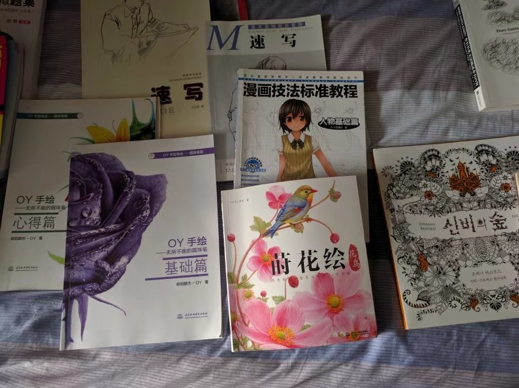
绘画类：
《素描静物技法指导与临本》。这本书，什么时候有的，我不记得了。只是年前回去的时候看它在书柜里吃灰，然后就带它来看看武汉的风景。其实从小就一直觉得能把自己想画的东西画粗来觉得很帅，不管画的东西有没有意义及意境，但就是做这一件事就是很愉悦的，只是喜欢。由于没有系统学过，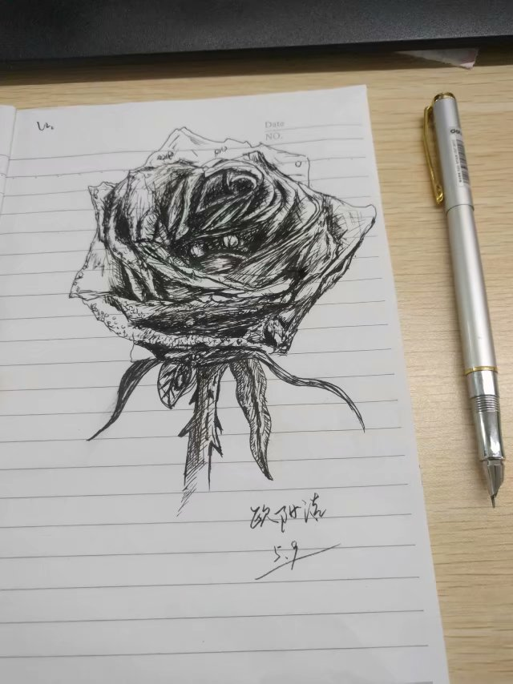只是一直在模仿，所以也不知道自己处在一个什么阶段。不过也多亏我还会想起来学画画，从小学就一直关注画画技巧有关的知识，也做过很多动漫卡牌的临摹涂鸦，直到有一天我在那啥教育频道看到素描的直播课。神奇啊，我就开始捣鼓素描，也就放假的时候搞，画几何体画无聊了，听说画人体更牛逼，那啥人体艺术。然后就搞了一堆女性裸体的图片来画（鼻血），不要问我哪里搞来的，我那时候进出学校老师办公室易如反掌，搞点人体艺术的小书籍还是可以的。我到现在还想不清楚我为什么会把我画的东西给老妈看，可能是村里人都是比较保守，我信不过，可是她偏偏与众不同，说这是艺术啥啥的，加油!!（=_=）走火入魔后是非常恐怖的，看到异性就能透视，莫名其妙的脸红发热，严重影响了我的学习和生活。于是，不知道是哪一天，我把我的画和画画的热情一把火烧了，或许我是画不好人体愤怒，或许我是无法明白画画随之而来的烦恼增多的愤怒，成为了这把火的导火线。那以后，我与画笔也别了六七年不见，也是这本书，让我想起了自学素描的往事。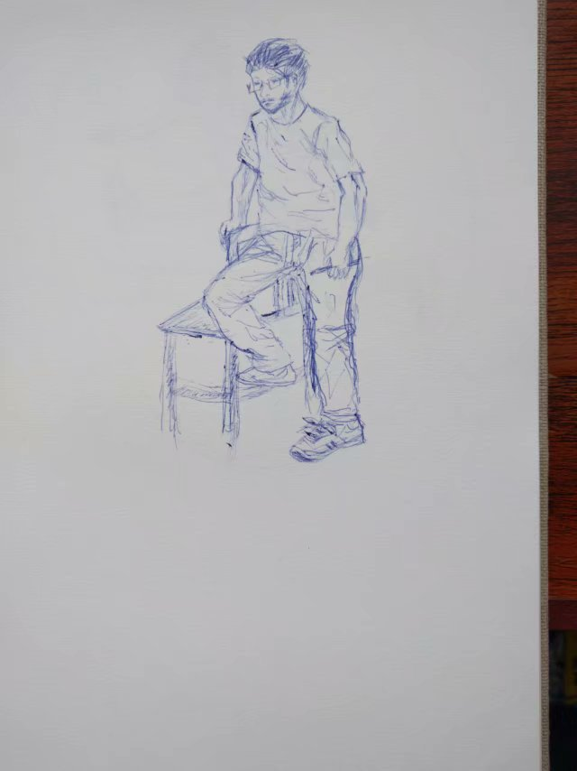
《速写（基础起步）》和
《速写（技法指导）》。同上，家里吃灰带来的书，我是不太喜欢知识盲区的，所以画家打草稿的技巧也会去了解，嘻。速写，简而言之，要快、准。达到这样的功底，需要大量的练习和总结，然而我工作后虽然领悟到了，却并没有去练习，只是简单的瞎画，量没有，质量也不怎么样，就像这幅自画像。

《OY手绘——无所不能的圆珠笔》。B站看手绘直播了解到OY的，同样是姓欧阳的大触，果断买了书，粉了下。这锤子画画画的和照片一样，看了不禁生出一种教练我也想画圆珠笔画的想法，然后，收集圆珠笔，唔。
《漫画技法标准教程（人物基础）》。又是画人，我好方。不过是漫画，还算可以了，起得早的时候，会沏杯茶，画两张头像，以表态度。不是那啥国漫崛起靠我们这一代，要了解一点知识，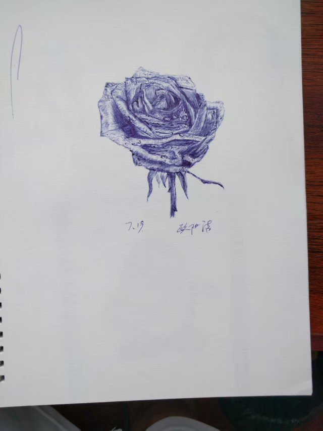学习学习。多一个懂一点的人，少一堆喷子，唔。
《莳花绘·花鸟》。认识一位画彩铅的女孩，她是自学的，我就买了这本书临摹，无论素描、圆珠笔还是钢笔啥的，之前都没试过彩色笔，一开始还是很惨的，各种颜色错杂，不堪入目。不过彩色很有意思，比画素描心情要放松些。
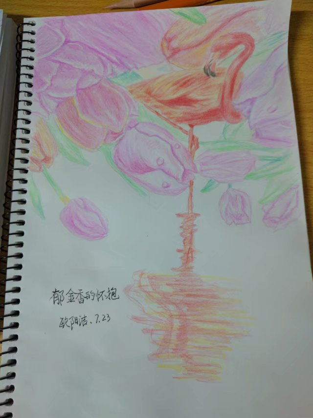
《秘密花园（涂鸦）》。这个是买笔送的，涂鸦减压的绘本。
总而言之，看画画书作为业余爱好，貌似还不错呢，反正如果你有兴趣的话。因为，读书使人快乐，了解是最大的喜悦。
总而言之，看画画书作为业余爱好，貌似还不错呢，反正如果你有兴趣的话。因为，读书使人快乐，了解是最大的喜悦。
语言类：
《零起点日语入门 》。我已经记不得这本书怎么来的，里面的日语发音大量的汉字谐音。想当年，英语就是毁在自创的汉语谐音上面，搞得我小学四年、初中三年暑假都在补英语，高中晚上还和班上三四个同学上我们英语老师的小课堂加餐。 不能忍，这本书不看，哼。
《零起点日语入门 》。我已经记不得这本书怎么来的，里面的日语发音大量的汉字谐音。想当年，英语就是毁在自创的汉语谐音上面，搞得我小学四年、初中三年暑假都在补英语，高中晚上还和班上三四个同学上我们英语老师的小课堂加餐。 不能忍，这本书不看，哼。
《日语发音与纠音》
、《一番日本语·美文箐华》、
《高级日语精读》、《
国际日语水平考试和日语全新模拟题集》。这几本书，要从遥远的记忆中勾起，貌似是大二那年，和同学去苏州，中间他有一天有事，我一个人在苏州某个步行街，被人拐到了什么樱花日语的公司，跟一个负责人聊了一下午的日语文化。我好像是来看漫展的吧，要不是我成熟稳重，加上看她是个小姐姐，我早走了。于是，埋下了日语学习的种子。第二天，和同学逛到了一个二手书的小店。。。老板，这书多少钱？。。。五块钱一斤。。。五块钱一斤。。卧槽，来两斤！！书中自有黄金屋，我瞥了老板一眼，暗叹世风日下。其实买回来之后我一个字也看不懂，只能摆在书架上装逼，直到去年的某天，早道有位小姐姐给我打电话，我就报了个网校，一窥其奥。不过，学到现在，我看日本电影还是听不懂他们在说什么（滑稽）。
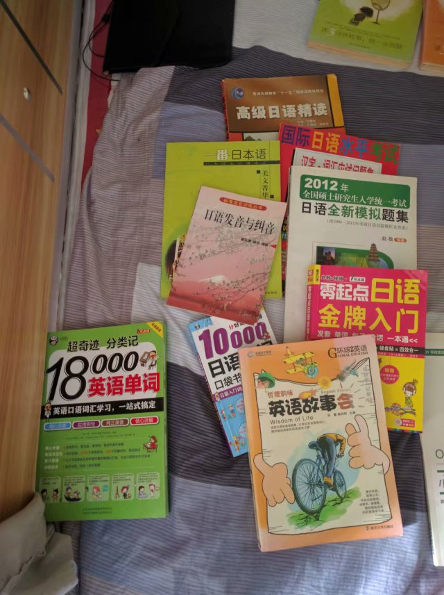
《10000日语单词口袋书》。某宝上买的，然而并不能装进口袋，还是大了（=_=）。在努力攻读中，记忆力打不如前 ，呼。
《18000英语单词》。某宝买的，只有在早上蹲坑的时候才有可能会被我幸临的书之一。随意翻看的那种，碎片时间感觉没什么效率，可能是工作的原因吧，早上也没以前有状态。
《英语故事会》。大学书摊上买的，蹲坑读物。读这本书看运气 ，因为个人有强迫症，如果不幸挑到一篇长文章，加之我的翻译效率低，会蹲到腿麻，看完才起身。有时，腿麻的厉害还需要在床上趴个几分钟（=_=），还好我不是低血糖，要不蹲坑到晕倒就大发了。
确实，读书使人快乐，了解是最大的喜悦。
小说杂志：
《韩寒作品集》。大学在书摊上买的。其实韩寒的书在高中几乎都读完了，那时候有个同学有好几本韩寒的书，抢着读、手机去老板那下载着读，几乎是他的小说、杂文，甚至是微博评论出版的书都读完了。什么《他的国》、 《像少年啦飞驰》、《1988，我想和这个世界谈谈》、《三重门》、《草》、《一座城池》、《青春》等等，所以这本书大学买来之后，也一直放电脑下面垫着，纪念那时候简单快乐的阅读时光。
小说杂志：
《韩寒作品集》。大学在书摊上买的。其实韩寒的书在高中几乎都读完了，那时候有个同学有好几本韩寒的书，抢着读、手机去老板那下载着读，几乎是他的小说、杂文，甚至是微博评论出版的书都读完了。什么《他的国》、 《像少年啦飞驰》、《1988，我想和这个世界谈谈》、《三重门》、《草》、《一座城池》、《青春》等等，所以这本书大学买来之后，也一直放电脑下面垫着，纪念那时候简单快乐的阅读时光。
《红楼梦》。高中就买了，说是为了考一题名著选择题，其实到现在我还没读完。我高中时候尝试过念红楼梦，妄想把他念完，结果是，我念着念着睡着了，这与为啥把它带过来，想好好睡觉吧，唔。
《六角丛书·觉悟人生》、
《六角丛书·品悟生命》。这种鸡汤书家里很多，什么智慧背囊、伊索寓言呀之类的，有时候看下还是可以的，一直期待有机会给误入歧途的小朋友，讲讲其中可以对应上的故事，然后收获他们崇拜智者的眼神（捂脸）。
《疯狂阅读·最美文（2017.1-2月）》、
《青年文摘（2017.2）》。蹲坑读物，过年在县里的鸿儒书店买的，美文一如既往的读着忧郁，杂志一如既往的不知不觉就读完了。
《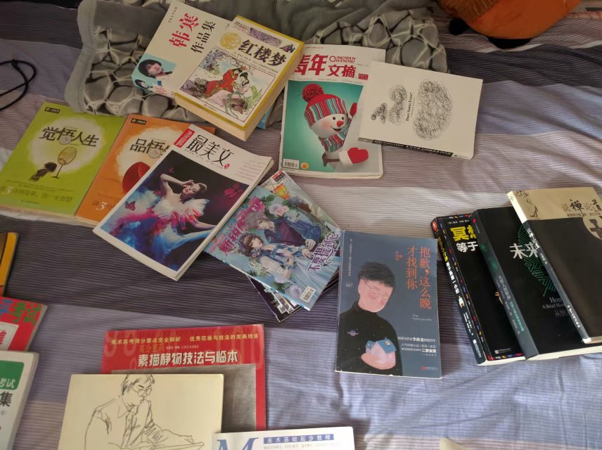新锐阅读
》（1月Bx2本、1月Cx2本、2月Ax2本）。六本恐怖杂志，过年买的，买回来打发妹妹给了她一本看，她都觉得没啥，第二天煞有其事的拉着她的同学开讲堂，什么人有三魂、三魄，什么少了就会什么什么，然后某某学生某天啥啥巴拉巴拉。不是七魄吗？现在的小孩子，怎么可能理解我们在听爷爷奶奶哥哥姐姐们口口相传的经典民间鬼故事中长大的情结，不过这恐怖杂志越来越水了，想当年高中旁的书店卖的怖客，里面的校园恐怖故事多么引人入胜，晚上都不会一个人去上厕所，什么《谁是小鬼》、《方园四杀阵》同学们看了口口相传，寝室夜间必备的校园小故事，世风日下，哎。
《抱歉，这么晚才找到你》。工作后某宝买的，全是讲的爱情故事，很温馨，即使是我这种单身狗看了，也没有被虐的感觉。 希望找到像书中这样简单又自然的爱。
《冥想5分钟，等于熟睡一小时》。 某宝买的，学习静坐用的，不是玄学，主要是教我们怎么用我们所学的知识，去想象。冥想的时间长短，与我们的知识广度和深度有关。你学了生物，可以想象以阳光的视角，如何通过光合作用，能量转换，植物、动物。。。成为你身体的一部分的；你学了物理可以知道阳光从小的原子反应，化为光，转化成为你身体的一部分的，又或者你身体的一部分是怎样从一开始的宇宙尘埃，经过怎样的历程，最后变成你的。这是一个简单的思路，还有其他的，比如把情感色彩化，把人生经历历史化等等，蛮好玩，嘻。
《本书无法描述本书的内容》。这本书也是在某宝上看到推荐买的。它总共就两百多页多一点，我看到70多页，还在讲啥圣诞老人，感觉没有什么文化共鸣，不怎么认同，不看了。
《说禅论道》。高中时候买的，那时候对我的人生观有很多哲理性的引导。当时挑灯夜读猛地读完了，感觉醍醐灌顶。讲道家、儒家、佛家、基督教的特点和差别，个人比较欣赏道家的自然和基督教的肉身成圣，唔。
《未来简史》。 某宝上买的，好书，可以去读读。这本书是接续作者前一本人类简史的，感觉比前一本更有趣。我已经看到了本书的最后一个部分，就是对未来的细节构想。前面两部分高瞻远瞩的分析了人类的发展，不管是规律、情感、文化、社会，令人豁然开朗。不管是少数人创造的神，还是现代科技创造的神，不管是信仰的现实，还是互为主体的现实，历史总是惊人的相似。现在的我们活在人类创造的现实中，社会的规律如何变化，未来的我们将在怎样的现实中，人类将如何进化，随之个人如何去影响世界。生而为人，愿不同草木禽兽般迷茫，幸也。
小说杂志属于泛读类书籍，但是也是最易接受的阅读感受。显然，
读书使人快乐，了解是最大的喜悦。
其他类：
《 餐桌礼仪》。蹲坑读物，新华书店购。目前，只看完穿戴篇和订餐篇，兴许有天会用上。虽然目前接触的聚餐都是不拘小节类型的，但是或许有备无患。
其他类：
《 餐桌礼仪》。蹲坑读物，新华书店购。目前，只看完穿戴篇和订餐篇，兴许有天会用上。虽然目前接触的聚餐都是不拘小节类型的，但是或许有备无患。
《实用急救与应急知识手册》。蹲坑读物，新华书店购。比较乏味，没有太大的共鸣（=_=），本来是买给我妈读的，她丢那吃灰了，我就带过来了，不是十分想读。
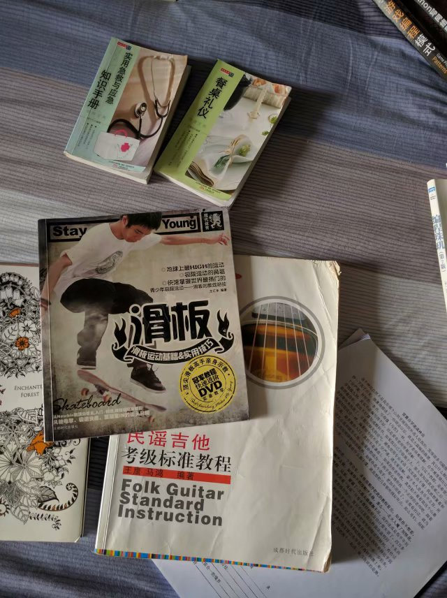 《滑板运动基础与实用技巧》
。大学买滑板后，在新华书店买的。了解了他们做滑板动作的技巧和原理，但是自己当时练了半天才学会跳那么点高，伤心。还有，滑板运动还是比较危险的，需要练习才能有成果，唔。
《民谣吉他·考级标准教程》。大学同系同学送的，没有认真看。首先没有买吉他，其次不太懂五线谱，小学一二年级才有音乐教程，那时候只学了4/4、2/4拍这种节拍和简单的数字谱
，get不到点（=_=）
《笛箫自学速成神功
》。网络教程，自打印的。买了个笛子，还处在练气阶段。喵了个咪的，教程上说正常男性一口气能吹10条气柱，女的能吹8条，我竟然只能吹5条，难怪我去游泳池总喝水，除了不会游泳，还有英雄气短这一原因。
点题
，读书使人快乐，了解是最大的喜悦。
虽然上面有50本书， 但可以看出并没有全读，而且很多大都是泛读，书单中划勾的、画叉的准备寄给我的可爱妹妹，唔。时间并非蛮多，个人不怎么玩游戏，一个星期一次、到一个月一次、到几个月一次帮别人戒游戏，然后玩个锤子游戏，大学同学两个钻石的带我才能五五开（=_=）。周六、周末，除了偶尔想去锻炼会出门、逛超市出门、去书城出门、吃饭出门、天气好想出去玩会邀请别人去玩出门（冬冷夏热无春秋的武汉这种情况不多），天气好被同学邀请出门（同前），或者约好开车之类的出门（滑稽）、参加极少情况的社交活动出门，其他的时间，反正没有女朋友，看书呗。反正，读书使朕快乐，了解是朕最大的喜悦。

虽然上面有50本书， 但可以看出并没有全读，而且很多大都是泛读，书单中划勾的、画叉的准备寄给我的可爱妹妹，唔。时间并非蛮多，个人不怎么玩游戏，一个星期一次、到一个月一次、到几个月一次帮别人戒游戏，然后玩个锤子游戏，大学同学两个钻石的带我才能五五开（=_=）。周六、周末，除了偶尔想去锻炼会出门、逛超市出门、去书城出门、吃饭出门、天气好想出去玩会邀请别人去玩出门（冬冷夏热无春秋的武汉这种情况不多），天气好被同学邀请出门（同前），或者约好开车之类的出门（滑稽）、参加极少情况的社交活动出门，其他的时间，反正没有女朋友，看书呗。反正，读书使朕快乐，了解是朕最大的喜悦。